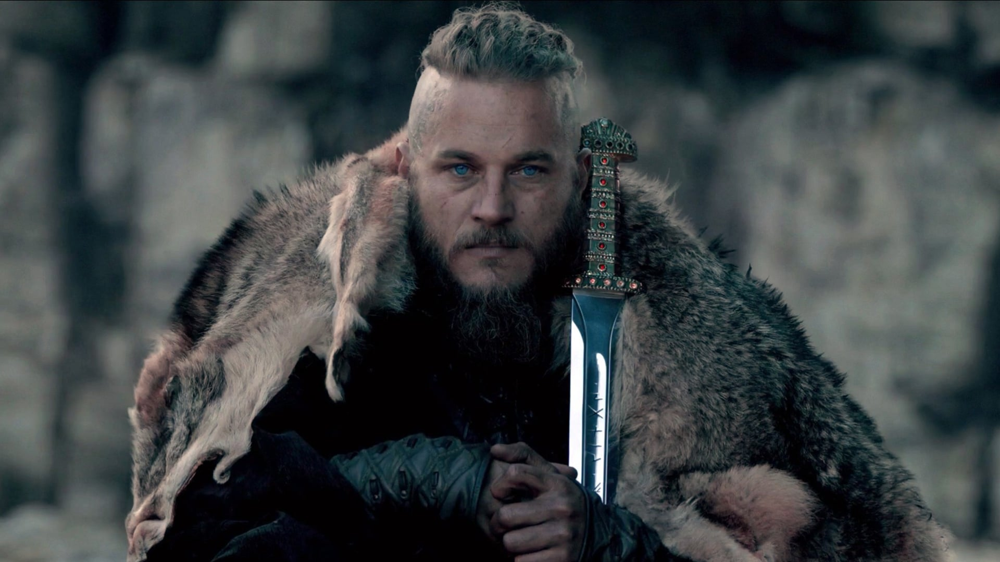

Vikings é uma série de televisão de drama histórico escrita e criada por Michael Hirst para a emissora History. Filmada na Irlanda, a série estreou em 3 de março de 2013 no Canadá.
Vikings é inspirada nas sagas do Viking Ragnar Lothbrok, um dos mais conhecidos heróis nórdicos lendários e chamado de flagelo da Inglaterra e da França. A série retrata Ragnar como um fazendeiro que alcança a fama por seus ataques bem-sucedidos na Inglaterra e, mais tarde, se torna um Rei escandinavo, com o apoio de sua família e colegas guerreiros: seu irmão Rollo, seu filho Bjorn Flanco de Ferro, e suas esposas, a escudeira Lagertha e a princesa Aslaug.
isso aqui é um paragrafo e depois vem um link: Link mdn
